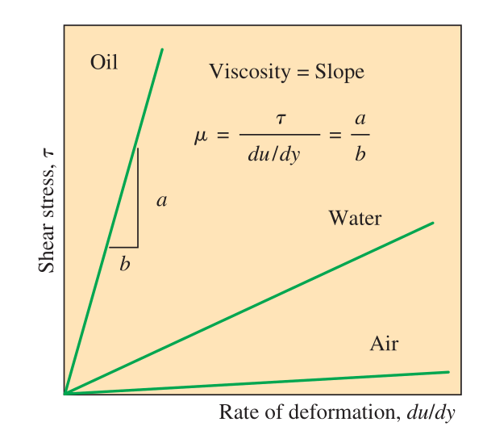
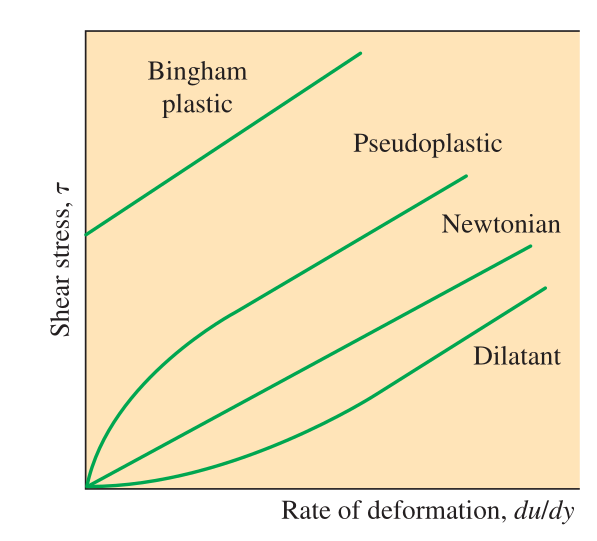

Elementary Fluid Mechanics
CE-ENGIN 357 - Fall 2024
Today
- Viscosity
- No-slip condition
- Reynolds number
- Flow between plates
Viscosity

Viscosity is a quantitative measure of a fluid's resistance to flow.
- Internal resistance of a fluid to motion
- Force a fluid exerts on a body in the flow direction is the drag force
Shear stress and viscosity
\[\delta \theta \approx \tan{\delta \theta} = \dfrac{\delta u \delta t}{\delta y}\]
\[\dfrac{d\theta}{dt} = \dfrac{du}{dy}\]
\[\boxed{\tau = \mu \dfrac{d\theta}{dt} = \mu \dfrac{du}{dy}}\]
Viscosity of a fluid
\(\mu\) is the coefficient of viscosity (or dynamic) with units of \(\mathrm{kg/m \cdot s}\)
Viscosity varies with temperature and pressure
Kinematic viscosity \[\nu = \dfrac{\mu}{\rho}\]
Rate of deformation and shear stress
Newtonian fluids 
Non-Newtonian fluids 
Shear distribution for Newtonian fluid
No-slip condition
- Velocity at the wall is zero
- Result of viscosity
- Flow region next to wall \(\rightarrow\) boundary layer
- Creates surface drag (force in the direction of flow)
- Serves as boundary condition for solving for velocity
How does viscosity vary with pressure and temperature?
Viscosity of liquids vs gases
Reynolds Number
Primary parameter correlating the viscous behavior of all Newtonian fluids is the dimensionless Reynolds number
\[\boxed{\text{Re} = \dfrac{\rho V L}{\mu} = \dfrac{V L}{\nu}}\] \(V\) and \(L\) are characteristic velocity and length scales of the flow
Flow between plates
- Fluid is Newtonian
- Does not slip at either plate
- Shear stress is constant throughout the fluid
\[\dfrac{du}{dy} = \dfrac{\tau}{\mu} = \text{const}\] \[\Rightarrow u=a + by\] \[u = \left\{ \begin{array}{ll} 0 = a+b(0) & y=0 \\ V = a+b(h) & y=h \end{array} \right.\] \[\Rightarrow u = V\dfrac{y}{h}\]
You should…
- Be able to define viscosity and what controls it
- Know the relationship betwee shear stress and viscosity coefficients
- Know what a no-slip condition is and why it is useful
- Understand simple velocity profiles in fluid flow